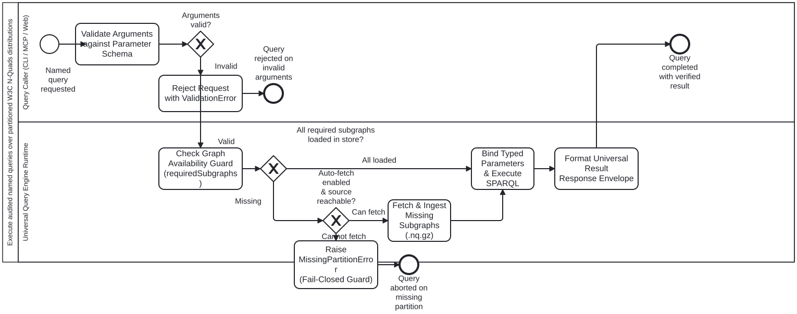

Generated from
cat-harness/processes/kg/named-query-execution.bpmnbygen-processes-viz.ts— do not edit here. All processes
Process_NamedQueryExecution · strict · 7 step(s)
Universal execution of audited named SPARQL queries against W3C RDF 1.1 N-Quads distributions across CLI, MCP, and Web runtimes. Governed by skill named-query-execution and schema schemas/nquads-distribution.ts.
CRITICAL INVARIANTS:

named-query-execution skill without calling this process: Package and distribute partitioned W3C N-Quads and named queries — activity-calls-skill-process asks whether each should be a call activity.| lane | role | what it does here |
|---|---|---|
| Query Caller (CLI / MCP / Web) | authoring-agent |
The invoking entity (agent, CLI command, MCP tool call, or browser web client) requesting execution of an audited named query with typed arguments. |
| Universal Query Engine Runtime | build-pipeline |
The Oxigraph in-memory RDF store runtime (Node/Bun oxigraph or browser oxigraph.js WASM) enforcing graph availability, parameter binding, and query evaluation. |
Every one of the 7 step(s) is documented.
| step | lane | skill / sub-process | what it does |
|---|---|---|---|
Validate Arguments against Parameter SchemaA_ValidateParams |
Query Caller (CLI / MCP / Web) | named-query-execution |
Look up query definition by queryId in distribution manifest. Validate supplied arguments against parameter types, required fields, and pattern constraints. |
Reject Request with ValidationErrorA_RejectInvalidArgs |
Query Caller (CLI / MCP / Web) | named-query-execution |
Abort execution immediately with detailed validation error describing missing or ill-typed arguments. |
Check Graph Availability Guard (requiredSubgraphs)A_CheckSubgraphs |
Universal Query Engine Runtime | named-query-execution |
Inspect query definition requiredSubgraphs list. Verify that each required subgraph is currently loaded into the Oxigraph store. |
Fetch & Ingest Missing Subgraphs (.nq.gz)A_FetchPartitions |
Universal Query Engine Runtime | named-query-execution |
Fetch missing partition payloads over HTTP (servedRoute) or local files, decompress gzip streams, and ingest quads directly into store. |
Raise MissingPartitionError (Fail-Closed Guard)A_RaiseMissingPartition |
Universal Query Engine Runtime | named-query-execution |
Fail execution fast: throw MissingPartitionError naming the required subgraphs that are absent. Never return silent partial answers. |
Bind Typed Parameters & Execute SPARQLA_BindExecute |
Universal Query Engine Runtime | named-query-execution |
Safely bind validated parameters into the audited SPARQL template with escaping. Execute SPARQL query against the Oxigraph store. |
Format Universal Result Response EnvelopeA_FormatResponse |
Universal Query Engine Runtime | named-query-execution |
Serialize query results into NamedQueryResponseSchema envelope: queryId, executionTimeMs, rowCount, bindings (for SELECT), boolean (for ASK), or quads (for CONSTRUCT). |
3 of 3 decision(s) carry no documentation — gateway-documented lists them.
| decision | what decides it | branches |
|---|---|---|
Arguments valid?GW_ValidParams |
— | Valid → Check Graph Availability Guard (requiredSubgraphs) Invalid → Reject Request with ValidationError |
All required subgraphs loaded in store?GW_SubgraphsLoaded |
— | All loaded → Bind Typed Parameters & Execute SPARQL Missing → Auto-fetch enabled & source reachable? |
Auto-fetch enabled & source reachable?GW_AutoFetch |
— | Can fetch → Fetch & Ingest Missing Subgraphs (.nq.gz) Cannot fetch → Raise MissingPartitionError (Fail-Closed Guard) |